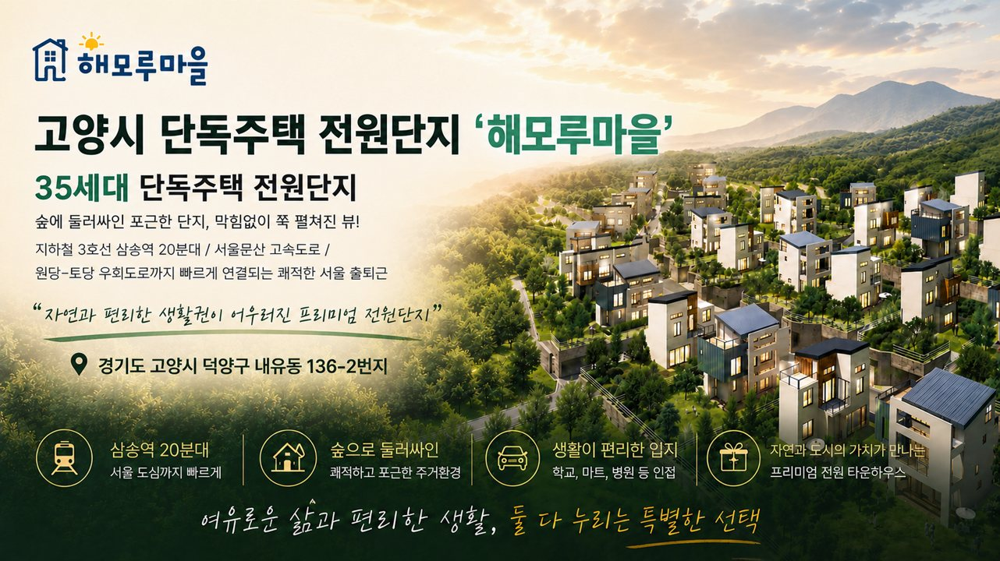
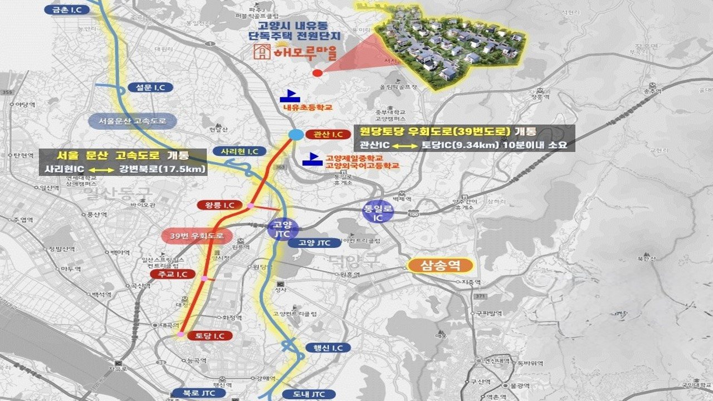
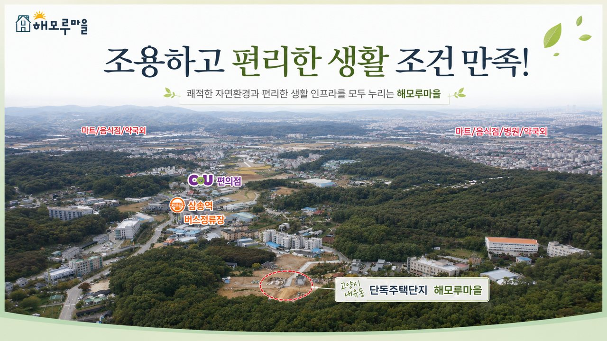
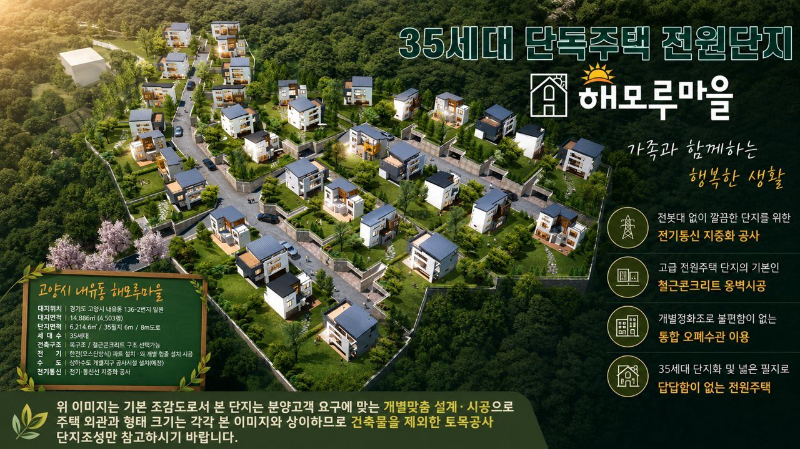
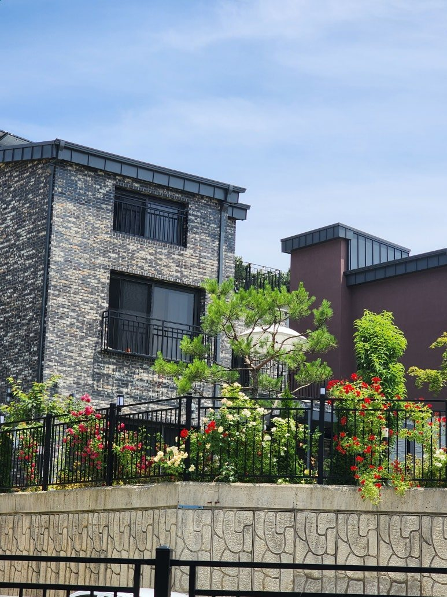
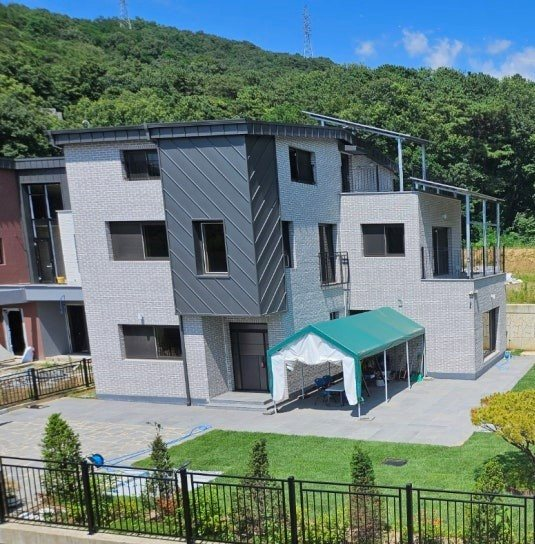
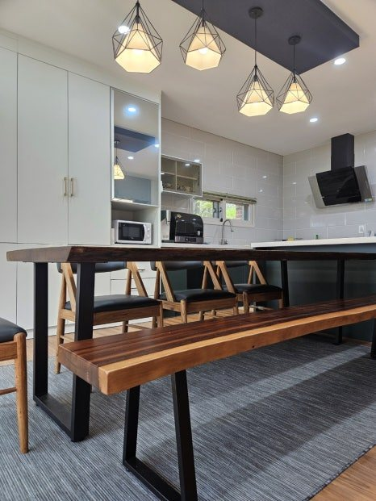
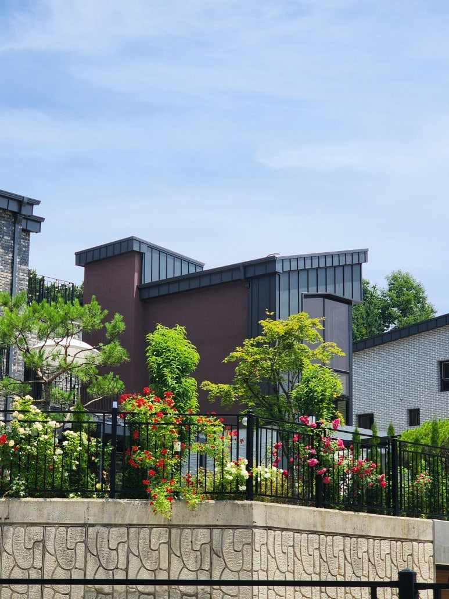
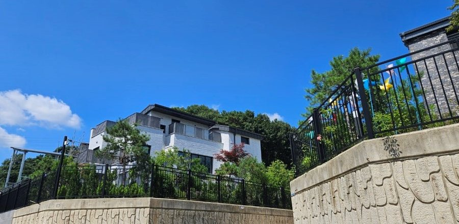

경기도 고양시 덕양구 내유동 136-2번지 일원
해가 모이는 곳
해모루 마을
도심 속 숲에 둘러싸인 35세대 단독주택 전원단지
막힘없이 펼쳐진 뷰, 해모루마을에서 시작됩니다

ABOUT HAEMORU
자연과 도시,
두 가치가 만나는 자리
해모루마을은 '해가 모이는 마당있는 집'이라는 뜻을 담아, 숲으로 둘러싸인 고양시 내유동 한 자락에 자리한 35세대 규모의 단독주택 전원단지입니다.
세대마다 독립된 마당과 충분한 채광을 누리면서, 지하철 삼송역과 원흥역, 원당역 주요 간선도로까지 빠르게 닿는 입지로 여유로운 전원생활과 편리한 도심 생활권을 동시에 제공합니다.
-
35세대 단독주택
전체 35필지로 조성되는 저밀도 단독주택형 전원단지
-
동간거리 15m 이상
세대 간 충분한 이격거리로 채광과 사생활을 함께 지키는 배치
-
100~120평 넓은 대지
필지별 넓은 대지로 답답함 없는 여유로운 마당 설계가 가능
-
숲으로 둘러싸인 단지
사방이 녹지로 둘러싸여 쾌적하고 포근한 주거환경 조성
-
삼송역, 원흥역, 원당역 20분대
지하철 3호선 3개 역까지 빠르게 연결되는 서울 출퇴근권
-
편리한 생활 인프라
학교·마트·병원·편의점이 가까운 생활이 편리한 입지
단독주택 전원단지
필지별 넓은 대지면적
동간거리
삼송역, 원흥역, 원당역 접근성
LOCATION
사방으로 열린
광역 교통망
서울문산고속도로와 원당-토당 우회도로(39번도로)가 만나는 자리, 서울 도심까지 거리를 좁히는 해모루마을의 입지입니다.

광역 교통
- 서울문산고속도로개통 — 사리현IC ↔ 강변북로 17.5km
- 원당-토당 우회도로(39번)개통 — 관산IC ↔ 토당IC 9.34km, 10분 이내
- 지하철 3호선 삼송역, 원흥역, 원당역버스 환승 20분대
- 고양JTC · 통일로IC인접, 강변북로·자유로 진입 용이
교육 환경
- 내유초등학교단지 인근 도보권
- 고양제일중학교차량 이용권
- 고양외국어고등학교차량 이용권
생활 편의
- CU 편의점단지 인접
- 삼송역 버스정류장도보 이용권
- 마트 · 음식점 · 병원 · 약국생활권 내 위치

조용하고 편리한 생활 조건을 모두 만족하는 해모루마을의 실제 입지
SITE PLAN
35필지,
저마다의 마당을 갖다
전봇대 없이 깔끔하게 정돈된 단지 풍경과, 개별 맞춤 설계가 가능한 35필지의 단독주택 전원단지 배치를 소개합니다.

| 대지위치 | 경기도 고양시 덕양구 내유동 136-2번지 일원 |
|---|---|
| 대지면적 | 14,886㎡ (4,503평) |
| 단지면적 | 6,214.6㎡ / 35필지 / 6m·8m 도로 |
| 필지면적 | 필지별 100~120평 내외 (넓은 개별 대지) |
| 동간거리 | 15m 이상 확보로 채광·사생활 보호 |
| 세대수 | 35세대 |
| 건축구조 | 목구조 / 철근콘크리트 구조 선택 가능 |
| 기반시설 | 상,하수도, 도시가스, 우수, 오수, 전기 통신 등 지중화 공사 완료 |
| 오수시설 | 개별 정화조가 필요 없는 통합 오폐수관 이용 |
- 세대 간 동간거리 15m 이상 확보로 답답하지 않은 채광과 사생활 보호
- 필지별 100~120평 내외의 넓은 대지로 여유로운 마당 조성 가능
- 전봇대 없이 깔끔한 단지를 위한 전기·통신 지중화 공사
- 고급 전원주택 단지의 기본인 철근콘크리트 옹벽시공
※ 위 이미지는 기본 조감도로서 본 단지는 분양고객 요구에 맞는 개별맞춤 설계·시공으로 주택 외관과 형태, 크기는 본 이미지와 상이할 수 있습니다. 건축물을 제외한 토목공사 및 단지조성 참고용 이미지입니다.
REAL HAEMORU
조감도가 아닌,
실제로 완성된 모습
해모루마을에 실제로 들어선 주택의 외관과 내부 인테리어 예시입니다. 도면 위의 계획이 아닌, 지금 자리한 풍경을 보여드립니다.





WHY HAEMORU
여유로운 삶과
편리한 생활, 둘 다 누리다
삼송역 20분대
서울 도심까지 빠르게 닿는 출퇴근권. 광역 교통망의 중심에서 누리는 도시 접근성.
숲으로 둘러싸인 단지
쾌적하고 포근한 주거환경. 사계절 자연이 만드는 마당있는 삶.
생활이 편리한 입지
학교, 마트, 병원 등 생활 인프라가 가까운 편리한 정주환경.
프리미엄 전원 타운하우스
자연과 도시의 가치가 만나는, 35세대 단독주택 전원단지.
CONTACT
해모루마을,
지금 상담을 신청하세요
분양 일정, 필지별 위치, 평면 및 설계 옵션 등 자세한 안내는 상담 신청을 통해 빠르게 받아보실 수 있습니다.
경기도 고양시 덕양구 내유동 136-2번지 일원
대표전화 010-3759-2166